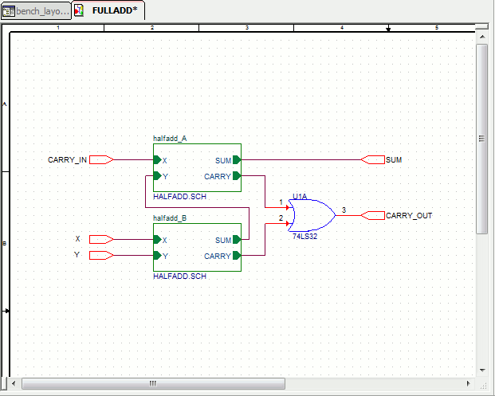
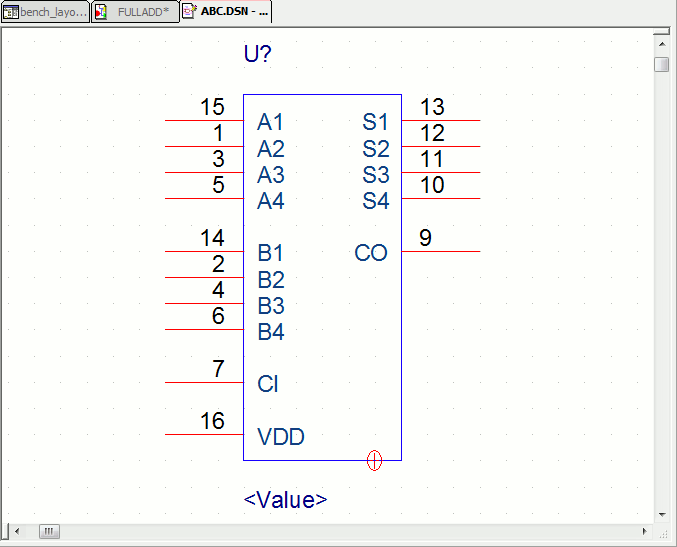

Capture includes a number of editors, including a text editor with features for creating VHDL models, a schematic editor, and a part editor. These editors mostly function in accordance with the general standards that one might expect in a Windows-based tool. However, there are certain unique traits (particularly with regard to zooming and scrolling) that distinguish the Capture editors from other Windows editors.
Schematic Page Editor |
|---|
|  |
| You edit schematic pages in the schematic page editor window. This window has two view splitters. The splitter at the upper right divides the view horizontally. The splitter at the lower left divides the view vertically. Each view has its own scroll bars, so you can view separate areas on the same page. |
Schematic Part Editor |
|---|
|  |
| You edit parts and symbols in the part editor window. This window has two view splitters. The splitter at the upper right divides the view horizontally. The splitter at the lower left divides the view vertically. Each view has its own scroll bars, so you can view separate areas on the same part. |
In this section: